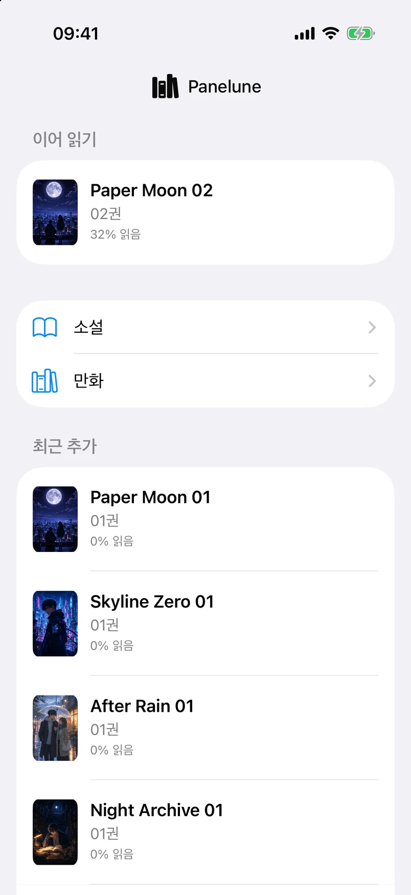
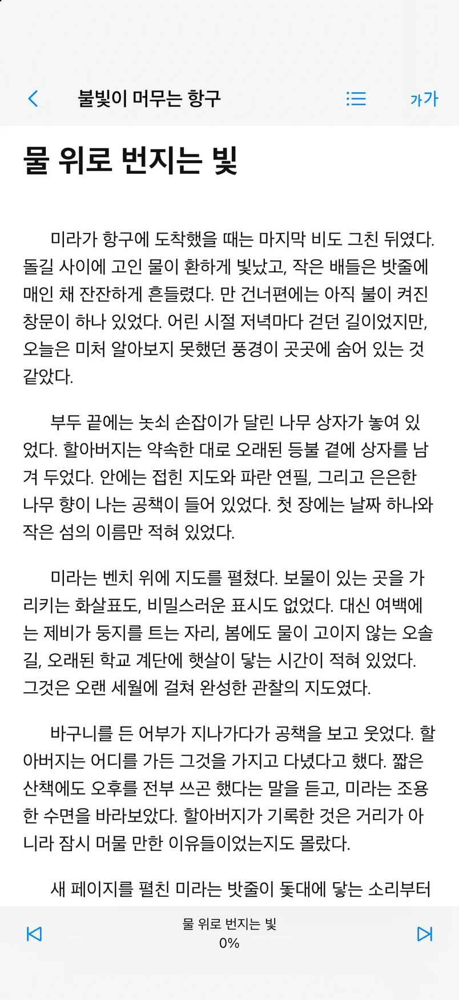
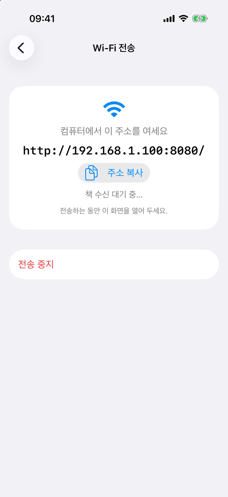

나만의 서재
만화와 소설을 한곳에 모아 시리즈(Series)와 권(Volumes)으로 정리하세요.
만화와 EPUB 소설을 위한, 개인정보를 존중하는 로컬 중심 리더입니다. 소장 도서를 정리하고 편안하게 읽으세요. 책은 내 기기에 보관됩니다.
Panelune 1.1.1은 iPad용으로 출시되었습니다. iPhone 지원과 읽기 개선이 포함된 1.2.0은 Apple 심사에 제출되었으며, 아직 출시되지 않았습니다.
직접 만든 데모 도서를 사용한 실제 Panelune 화면입니다. iPad 스크린샷은 영어로 표시됩니다.





만화와 소설을 한곳에 모아 시리즈(Series)와 권(Volumes)으로 정리하세요.
글꼴 조절, 목차, 읽기 위치 복원으로 소설에 몰입하세요.
손짓에 반응하는 페이지 넘기기 또는 연속 세로 스크롤을 선택하세요.
선택한 책을 별도의 서재에 보관하고 기기 인증으로 접근을 보호합니다.
파일 앱에서 가져오거나 로컬 Wi-Fi로 컴퓨터에서 책을 전송하세요.
가져온 책은 오프라인으로 읽을 수 있습니다. 계정이나 개발자가 운영하는 클라우드 서재가 필요하지 않습니다.
1.2.0에서 개선 예정: EPUB 표시와 조판, 글꼴 설정, 만화의 인터랙티브 페이지 넘기기, iPhone 및 iPad에서의 읽기 위치 복원.
앱은 English, 简体中文, 繁體中文, 日本語, 한국어를 지원합니다.
English · 简体中文 · 繁體中文 · 日本語 · 한국어
무료 버전은 최대 3개의 시리즈를 만들 수 있으며 기존 시리즈에는 계속 권을 추가할 수 있습니다. Panelune Pro는 시리즈 수 제한을 해제합니다.
한 번 구매로 이용하세요. 구독은 없습니다.
지역별 가격은 앱에서 확인하세요.